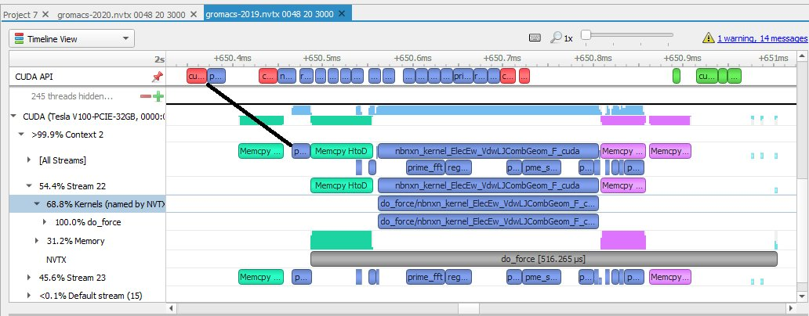
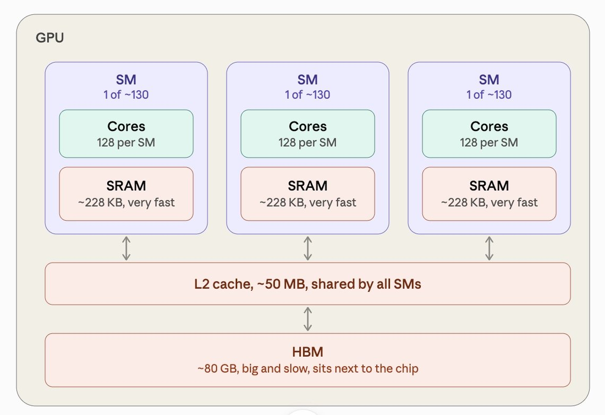

这段时间满屏都在聊推理与性能工程,每个人都似乎随口一句kernel、custom kernels。这篇用不到两千字的篇幅说清三件事:GPU kernel到底是个什么、它怎么被调起来、以及为什么(在别的手段之后)值得自己写一个。
操作系统里的kernel,是给软件程序与物理硬件之间提供API的内核程序。GPU编程里的kernel,是一个要并行跑在几千个线程上的函数。两条N里讲的往往是后一种:有人说自己wrote a kernel、或某模型因为custom kernels跑得快,指的都是给GPU写自定义内核。
kernel是一个在GPU上运行的函数,GPU把同一个函数同时跑在成千上万个线程上,每个线程领一个thread ID以分辨自己与自己的管辖范围。作者给了个两数组相加的例子:没有循环,a[]、b[]、out[] 都在共享内存里,数千线程分摊到不同的GPU核心。核心思想就是:每个线程认领自己的那份共享内存,加载、算一点、写回。
除非你写自定义kernel,否则不会直接调它。torch.matmul(a,b) 被编译成这样的链路:PyTorch见两数组在GPU上,选对应的C++ matmul函数;该函数再进NVIDIA自带预编译库(cuBLAS管矩阵乘法、cuDNN管常见神经网络op),或进PyTorch自己写的kernel;库再让GPU驱动去launch这个kernel:代码与数据指针都备好,用这么多线程跑它。之后CPU把launch丢进队列,继续执行下一行Python,GPU按队列顺序处理。
所以跑一次模型,本质是CPU排一排kernel launch、GPU一条条消化;用profiler看GPU时间线,就是数百个小方框,每个都是一个kernel。

每次launch有几微秒固定开销,累积起来相当可观。
GPU由又大又慢的高带宽内存HBM和又小又快的内存SRAM组成。HBM与SRAM之间带宽约是每秒几个TB,但核心做数学快得多,所以推理的大多数步骤里,核心总是在空等数据送达。

看stock(sic)PyTorch模型:一次三连拍,乘一个常数、加一个常数、过个激活。这会是三个独立kernel,每个都慢内存读入、算一点点、再写回慢内存。自定义kernel则一趟全做:读一次,乘、加、激活都在数字还在SRAM时完成,只写回一次。这就是人们说的融合(fused)kernel。
FlashAttention是名例:标准attention把完整注意力矩阵写到HBM,再读回做softmax并乘V;FlashAttention把一个tile在SRAM里就把score、softmax、乘V算完、累积好再进下一块。搭tile做这件事其实相当难,要很巧的算法,但收益就是少读写慢内存。
写custom kernel的确是改善首token延迟TTFT、逐token延迟、吞吐最帅的道路,可大多数增益来自kernel之上那些不性感的层:batching(合并许多请求进一次前向)、量化(权重存8/4 bit而非16,每token少读)、投机解码(小模型先猜几个token、大模型一次验证)、编译器(让ML compiler先自动融合易做的op)、以及前缀缓存、prefill/decode分离、paged attention等。
一个慢的推理系统慢在哪,多半是它跳过了上面这些标准招;写custom kernel工作量大,只有在它之上那层都已经足够快之后才值得动手。
NVIDIA上先用Triton:用Python写一块数据的逻辑,它替你生成GPU代码,能覆盖大部分需求;CUDA是更下一层,给你完全的控制。这个空间还留了很多活,大多在kernel之上：更好的batching、调度、整条推理栈上的内存管理;也大把在kernel旁边:Triton只是众多kernel DSL之一,ThunderKittens、TileLang、CuTe、Mojo都在控制力与易用性之间做各自的取舍。
作者还推荐一篇入门:Horace He的Making Deep Learning Go Brrrr From First Principles,即使你不打算写kernel,也值得读。
参考：https://x.com/liao_lucas/status/2097149853499588971